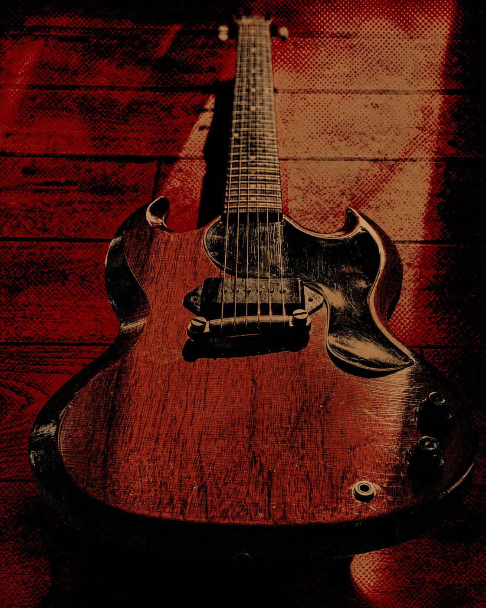
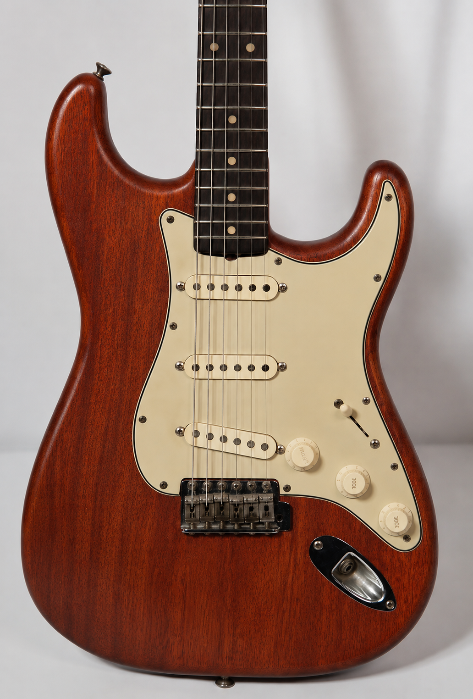

★ Egresados
SALIERON CON LA SUYA
No es teoría: cada persona termina el curso con su propia guitarra funcionando. Estos son algunos.



De la madera en bruto al instrumento terminado. En 6 meses construís —con tus propias manos y guiado por un luthier— una guitarra eléctrica completa, lista para tocar y grabar. Arrancás desde cero: no necesitás experiencia previa.
Fase por fase, esto es lo que vas a hacer con tus propias manos: desde elegir la madera hasta la calibración final. Sin atajos.
Sesión de 2 horas con el luthier para definir especificaciones técnicas, ergonomía y estética. Planos digitales aprobados antes de tocar la madera.
Elección personal del luthier de las piezas del stock con humedad medida. Corte CNC de alta precisión de cuerpo y mástil.
Encolado con adhesivos de temperatura controlada, instalación del alma, incrustación de trastes y trabajo de cejilla.
Lijado progresivo de grano 80 a 2000. Aplicación de acabado en capas con 72h de curado entre capas.
Instalación y bobinado manual de pastillas. Soldadura de plata con materiales de audiophile grade.
Nivelado de trastes, ajuste de acción, intonación por cuerda, prueba de resonancia con analizador espectral. El instrumento sale listo para grabar.
Jugá con las maderas y mirá cómo cambia tu instrumento en tiempo real.

Solo tus ganas. El taller pone absolutamente todo lo demás:
Todas las maderas y materiales para construir tu guitarra
Uso de herramientas y maquinaria profesional del taller
Hardware completo: pastillas, clavijas, puente y electrónica
Acompañamiento personalizado de un luthier de autor
Grupos reducidos de máximo 12 personas
Tu guitarra terminada es tuya, te la llevás a casa
No es teoría: cada persona termina el curso con su propia guitarra funcionando. Estos son algunos.

$890.000en 6 cuotas, o $750.000 al contado
Solo 12 cupos por camada. El depósito del 20% reserva tu lugar y se descuenta del total.